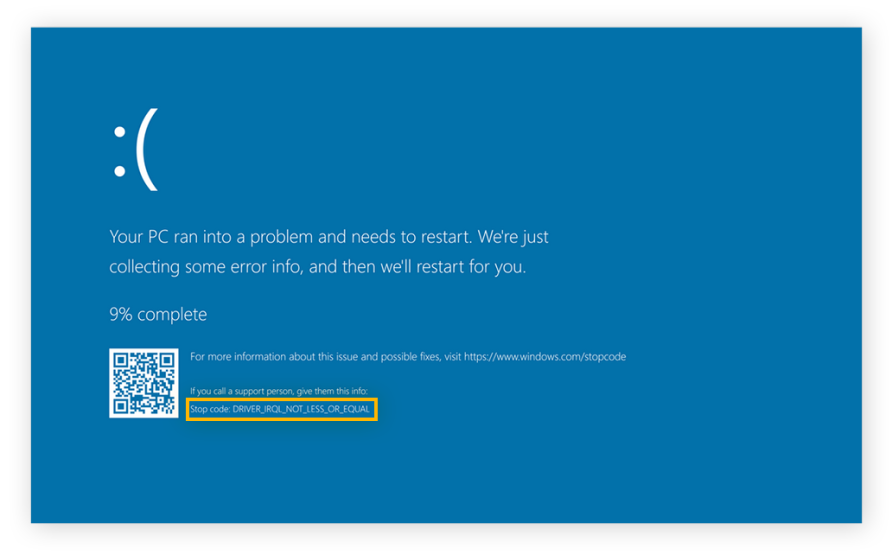

Bluescreen
Ein Bluescreen ist eine Fehlermeldung, die auf einem Windows-Betriebssystem angezeigt wird,
wenn es zu einem schwerwiegenden Fehler kommt, der das System daran hindert, normal zu funktionieren.
Im lauf der Seite bekommen Sie mehrere möglichkeiten wie man einen Bluescreen Problem behebrn kann.
Der Bluescreen zeigt normalerweise einen Stop-Fehlercode an und nach dem man im Internet suchen kann.

CHKDSK (Check Disk) ist ein eingebautes Windows-Dienstprogramm, das dazu dient, die Integrität und Konsistenz
von Dateisystemen auf Festplatten zu überprüfen und bei Bedarf Fehler zu korrigieren.
Dieser Befehl überprüft das Laufwerk C: auf Fehler und versucht, gefundene Fehler zu korrigieren. Der Schalter "/f" gibt an,
dass gefundene Fehler automatisch korrigiert werden sollen, und "/r" sucht nach fehlerhaften Sektoren und versucht,
diese zu reparieren. Falls das Laufwerk C:
gerade in Verwendung ist,
können Sie die Überprüfung beim nächsten Neustart planen, indem Sie aufgefordert werden, dies zu tun.
Die mdsched.exe ist das Windows-Speicherdiagnosetool, das in Microsoft Windows integriert ist und dazu dient, Probleme mit dem
Arbeitsspeicher (RAM) auf einem Computer zu erkennen.
Der Name steht für "Memory Diagnostics Scheduler". Das Tool führt
einen umfassenden RAM-Test durch, um sicherzustellen, dass der Speicher ordnungsgemäß funktioniert und keine Fehler aufweist.
Hinweis
Es ist ratsam, vor dem Test alle geöffneten Programme zu schließen und sicherzustellen,
dass keine wichtigen
Daten verloren gehen, da der Computer während des Tests neu gestartet wird.